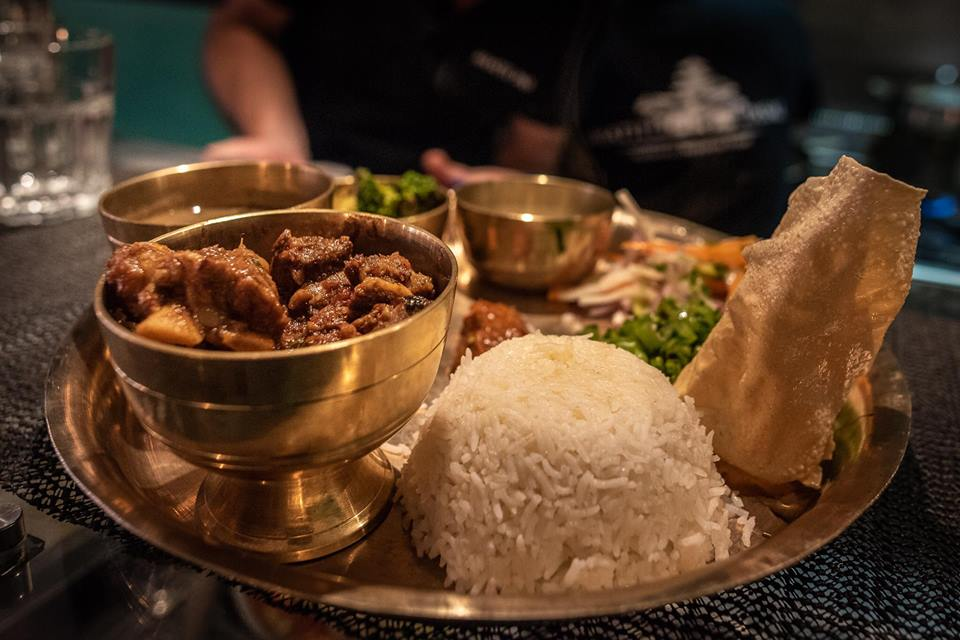
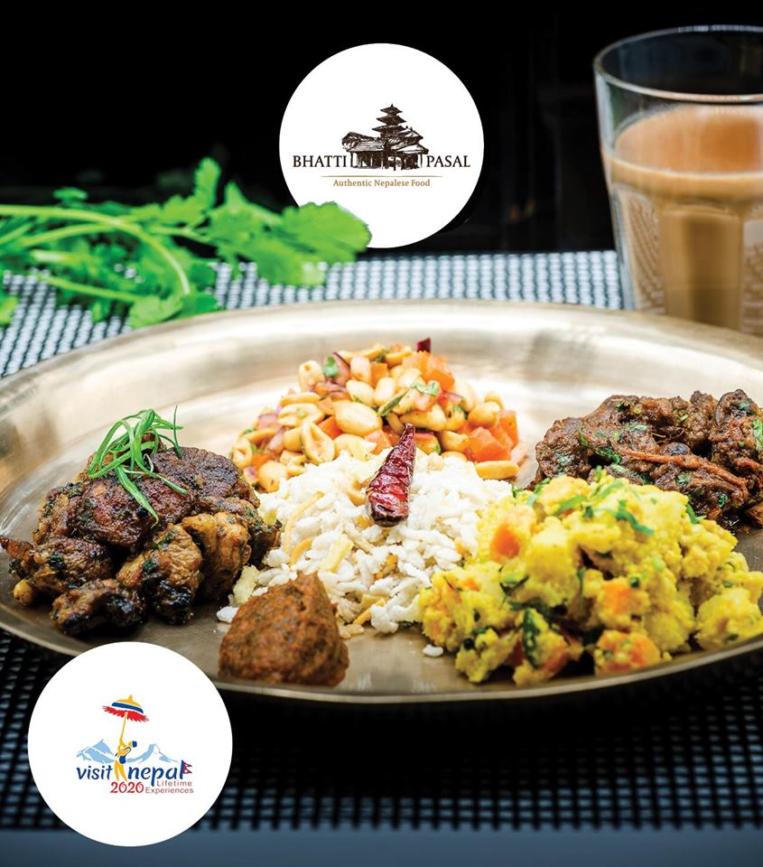

バッティ・パサルは、ライツェ広場、レンブラント広場、コニングスプレイン、ダム広場から目と鼻の先で、本格的なネパール料理を楽しめます。バッティ・パサルはネパールの狭い路地にある小さな飲食店で、本格的で美味しいネパール料理を提供しています
モモ

モモは南アジアの餃子の一種で、インド亜大陸とより広範な南アジアのヒマラヤ地域で人気があります。モモスはチベット、ブータン、ネパール、ラダックの北インド地域、シッキム、アッサム、アルナチャル・プラデーシュ州、ダージリンの北東インド地域に自生しています。中国の宝子やジアオジ、モンゴルのブズ、日本の餃子、韓国のマンドゥに似ていますが、インド亜大陸の料理に大きな影響を受けています。
ネパール食べ物
2.ネパール食べ物セット

ネパール料理は、ネパールの文化的多様性と地理に関する民族、土壌、気候に基づく様々な料理で構成されています。ダル・バット・タルカリ(ネパール:??? ???
??????)はネパール全土で食べられます。ダルはレンズ豆とスパイスで作られたスープで、ゆでた穀物、バット?通常ご飯ですが、時には別の野菜カレー、タルカリを添えます。調味料は、通常、新鮮または発酵することができるスパイシーなピクルス(アシャア、????)の少量であり、そのうちかなりの数の品種があります。[1]
他の伴奏は、新鮮な緑のチリ(ハリヨ・クルサニ)とレモン(ニブワ)またはライム(カガティ)をスライスすることができる。
3.ネワリ食べ物セット

食べ物はニューアル文化の不可欠な部分です。体の気候や栄養の必要性を考慮して、異なる種類の食品が異なる機会のために準備されています。ニューウォーズは豪華なごちそうで有名です。[1]
ごちそうや祭りの間に出される料理は象徴的な意義を持っています。